Projetos
Veja um pouco sobre os meus trabalhos durante meus estudos.
- All
- Jogos
- Mobile
- Figma
- Technology
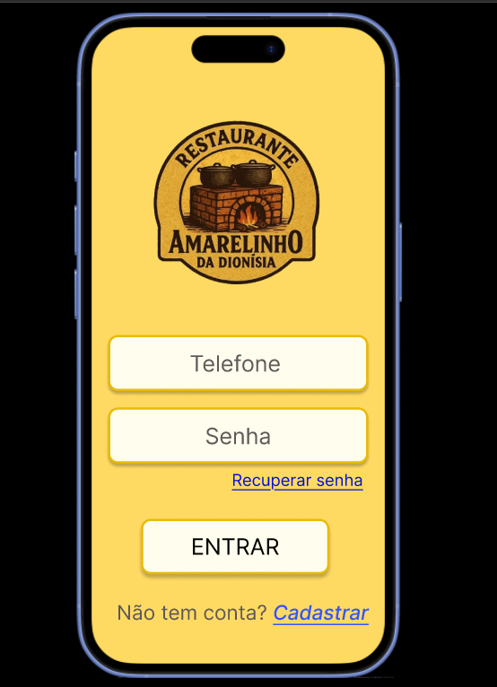
{kind=link}
App Amarelinho
Protótipo aplicativo de gestão de restaurante familiar no Figma
Sobre o Projeto
Solução de gestão desenvolvida sob medida para um restaurante familiar, com foco total em experiência do usuário (UX).
O projeto foi inteiramente moldado a partir de entrevistas com um casal de idosos, priorizando a usabilidade e funcionalidades específicas que atendessem às suas rotinas reais, fugindo de padrões genéricos e focando em utilidade prática.
Ano: 2025
Techs: Figma
Tailor-made management solution developed for a family restaurant, with a total focus on user experience (UX).
The project was entirely shaped through interviews with an elderly couple, prioritizing usability and specific features that met their real routines, moving away from generic patterns and focusing on practical utility.
Year: 2025
Techs: Figma
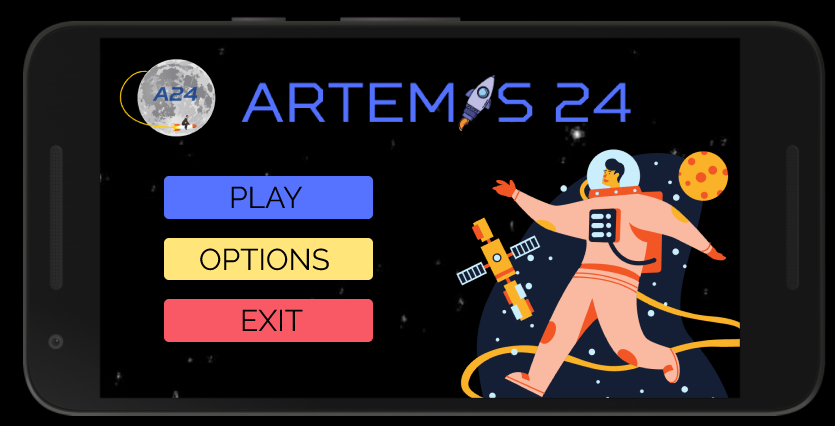
{kind=link}
Artemis 24
Protótipo de jogo mobile no Figma
Sobre o Projeto
Protótipo de um jogo criado para o NASA Space Apps Challenge 2021.
O projeto Artemis 24 é um jogo educativo voltado para estudantes amantes de astronomia. A ideia é simular os riscos de saúde de uma viagem de longa distância a Marte, traduzindo dados complexos da NASA em mecânicas compreensíveis. Os jogadores devem gerir os recursos da tripulação para mantê-los vivos e saudáveis durante a missão.
Ano: 2021
Techs: Figma
Game prototype created for the 2021 NASA Space Apps Challenge.
The Artemis 24 project is an educational game designed for astronomy enthusiasts. The goal is to simulate the health risks of a long-distance journey to Mars, translating complex NASA data into understandable mechanics. Players must manage crew resources to keep them alive and healthy throughout the mission.
Year: 2021
Techs: Figma, NASA Data
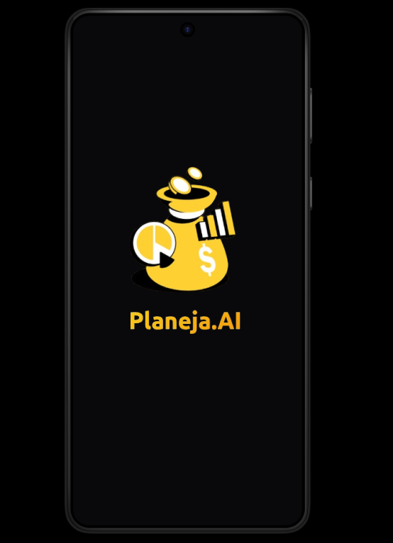
{kind=link}
PlanejaAi
Protótipo aplicativo de gestão financeira no Figma
Sobre o Projeto
Planeja.Ai é um protótipo de uma aplicação de planejamento financeiro, pensado para pessoas que buscam insights sobre seus gastos, acompanhamento de metas e organização em um mesmo sistema.
Ano: 2025
Techs: Figma
Planeja.Ai is a financial planning prototype designed for individuals seeking spending insights, goal tracking, and organization within a single platform.
Year: 2025
Techs: Figma
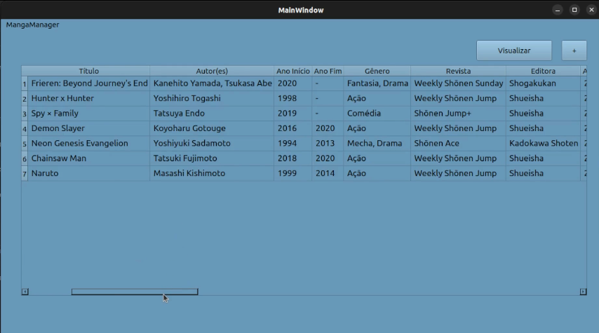
{kind=link}
mangaManager
Programa de Gerenciamento de Mangas - Estruturas de Dados
Sobre o Projeto
Desenvolvimento de uma aplicação robusta para o gerenciamento de acervos, focada em eficiência de busca e persistência de dados em baixo nível. O projeto implementa um sistema completo de CRUD (Create, Read, Update, Delete) com foco em estruturas de dados otimizadas.
Ano: 2025
Techs: C, Qt Creator e Estruturas de dados
Development of a robust application for the management of archives, focused on efficiency of search and persistence of data at a low level. The project implements a complete CRUD system (Create, Read, Update, Delete) with focus on optimized data structures.
Year: 2025
Techs: C, Qt Creator and Data Structures
{kind=link}
tutoHora
Website de agendamento de tutorias para estudantes
Sobre o Projeto
Programa para contratação de professores e tutoriais, em que os alunos poderão contratar tutores para auxiliar nas suas dificuldades escolares, possuindo login/cadastro, bem como uma listagem de todos os profissionais, contratação de professores disponíveis num formato do cronograma dos professores e página exclusiva para os professores, onde eles poderão visualizar suas aulas e alunos.
Ano: 2021
Techs: .Net Core, React, CSS, HTML, MySQL
Tutor and teacher hiring platform where students can book sessions to overcome academic challenges. The system features secure authentication, a comprehensive professional directory, an integrated scheduling calendar for bookings, and a dedicated dashboard for teachers to manage their classes and students.
Year: 2021
Techs: .Net Core, React, CSS, HTML, MySQL
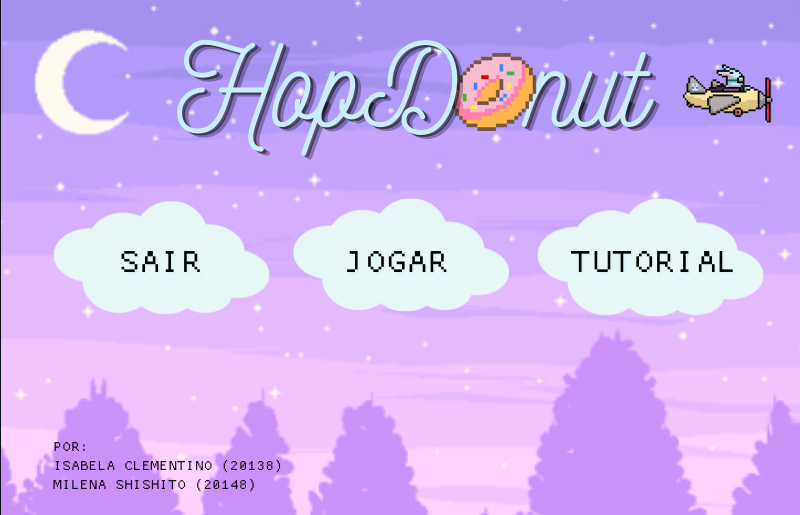
{kind=link}
HopDonut
Jogo em Pygame desenvolvido para Raspeberry Pi
Sobre o Projeto
Jogo em que você tem que se mover para coletar os donuts e evitar os obstáculos (rosquinhas gigantes). O jogo foi desenvolvido para o Raspberry Pi com Python e Pygame.
Ano: 2021
Techs: Python, Pygame, Raspberry Pi
A game where the player moves to collect donuts while avoiding obstacles (giant donuts). Developed for Raspberry Pi using Python and Pygame.
Year: 2021
Techs: Python, Pygame, Raspberry Pi
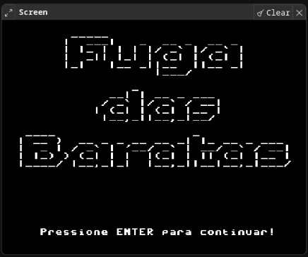
{kind=link}
Fuga das Baratas
Jogo em Assembly
Sobre o Projeto
"Fuga das Baratas" é um jogo desenvolvido em Assembly, no qual o jogador é o personagem da música "Toda vez que eu chego em casa a barata da vizinha ta na minha cama". Para vencer o jogo, ele deve acertar 10 chineladas na barata. O jogo foi projetado para ser executado no Simulador de Processador ou no Simple Simulate.
Ano: 2024
Techs: Assembly
"Fuga das Baratas" (Cockroach Escape) is a game developed in Assembly, inspired by a popular Brazilian song. Playing as the homeowner, the user must land 10 "flip-flop hits" on the cockroach to win. The project was designed to run on Processor Simulators such as Simple Simulator.
Year: 2024
Techs: Assembly
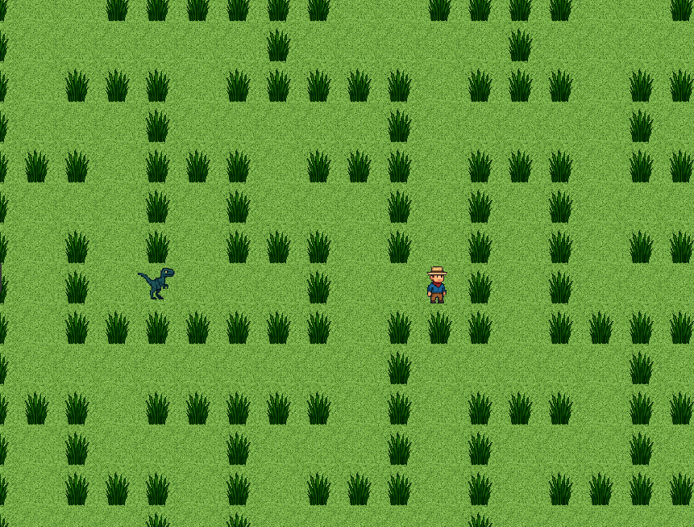
{kind=link}
Jurassic Escape
Jogo em Java - POO
Sobre o Projeto
Jurassic Escape é um jogo de aventura e estratégia desenvolvido em Java, focado na aplicação prática dos pilares de Programação Orientada a Objetos (POO).
No jogo, você assume o papel de um paleontólogo perdido em uma ilha repleta de perigos pré-históricos. Seu objetivo é atravessar diferentes biomas, sobreviver a encontros com dinossauros icônicos e alcançar o helicóptero de resgate. O paleontólogo precisa ser rápido e estratégico para não virar comida de dinossauro.
Ano: 2025
Techs: Java, POO
Jurassic Escape is an adventure and strategy game developed in Java, focusing on the practical application of Object-Oriented Programming (OOP) principles.
In the game, you play as a paleontologist stranded on an island filled with prehistoric dangers. Your goal is to navigate through different biomes, survive encounters with iconic dinosaurs, and reach the rescue helicopter. You must be quick and strategic to avoid becoming dinosaur food.
Year: 2025
Techs: Java, OOP
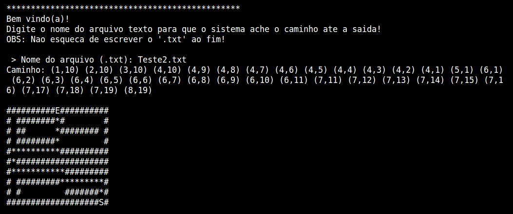
{kind=link}
Labirinto
Programa para encontrar saídas de labirintos
Sobre o Projeto
Programa em Java que encontra uma saída para um dado labirinto passado em formato .txt
Ano: 2020
Techs: Java, Pilhas, Fila, Matrizes
Java program that finds an exit for a given maze provided in .txt format.
Year: 2020
Techs: Java, Stacks, Queue, Matrices
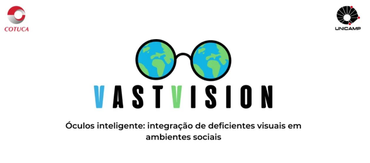
{kind=link}
VastVision
Solução voltada para pessoas com deficiência visual
Sobre o Projeto
O projeto busca desenvolver um dispositivo eletrônico de tecnologia assistiva, que seja financeiramente acessível e baseado em inteligência artificial, podendo reconhecer obstáculos e pessoas (com a funcionalidade de salvar os rostos mais vistos a partir de comando de voz) a fim de ampliar a integração de deficientes visuais no meio social. Assim, o trabalho busca produzir um óculos, que juntamente com um fone de ouvido e um microfone, e através de um aplicativo, possa descrever ao usuário o ambiente, para então promover a inclusão e liberdade de deficientes visuais.
Ano: 2022
Techs: ESP32-CAM, Mobile, Impressão 3D
This project aims to develop an affordable assistive technology device powered by Artificial Intelligence. It features obstacle and person recognition, including the ability to save frequently seen faces via voice commands, to enhance the social integration of visually impaired individuals. The system consists of smart glasses paired with a headset and microphone that, through a dedicated app, describe the environment to the user, promoting inclusion and independence.
Year: 2022
Techs: ESP32-CAM, Mobile,3D Printing
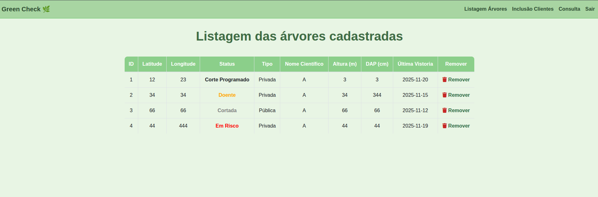
{kind=link}
Green Check
Aplicação para manunenção de árvores em risco em cidades inteligentes
Sobre o Projeto
Sistema criado para disciplina de Banco de dados, com o objetivo de ser um sistema de gerenciamento de árvores em risco em cidades inteligentes.
Ano: 2025
Techs: Python, HTML, Docker, PostgreSQL
A database management system developed for a Smart City environment, focused on monitoring and maintaining high-risk trees. This project was created as part of a Database course to streamline urban safety and environmental management.
Year: 2025
Techs: Python, HTML, Docker, PostgreSQL
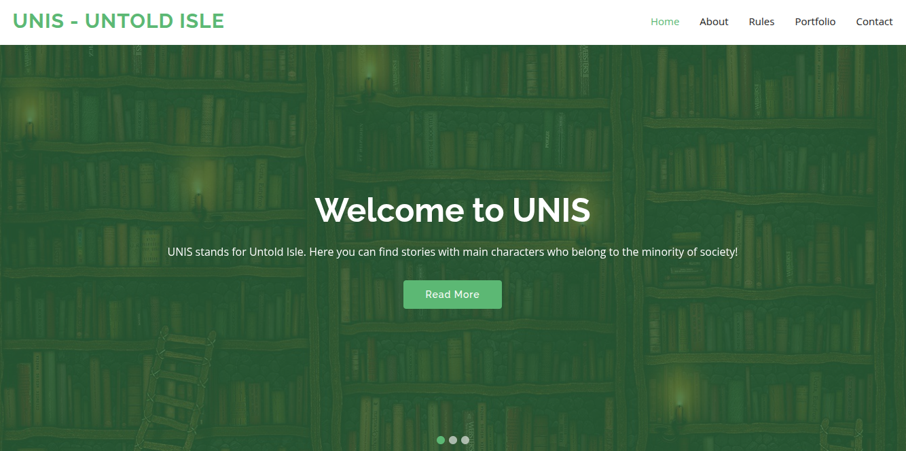
{kind=link}
UNIS - Untold Isle
Projeto para SuperPOSITRON Hackathon
Sobre o Projeto
O UNIS - Untold Isle é um projeto de representatividade literária que utiliza uma plataforma digital para dar voz a protagonistas de grupos minoritários. O objetivo é oferecer narrativas onde pessoas negras, a comunidade LGBTQIA+, idosos e pessoas com deficiência (como heróis cegos) sejam os personagens principais. A plataforma promove a inclusão social ao validar histórias "não contadas", garantindo um ambiente seguro através de regras rígidas de respeito aos direitos humanos e repúdio ao preconceito.
Ano: 2021
Techs: CSS, HTML, JavaScript
UNIS - Untold Isle is a literary representation project that utilizes a digital platform to amplify the voices of protagonists from minority groups. Its goal is to provide narratives where Black individuals, the LGBTQIA+ community, the elderly, and people with disabilities (such as blind heroes) are the main characters. The platform promotes social inclusion by validating "untold" stories, ensuring a safe environment through strict rules of respect for human rights and zero tolerance for prejudice.
Ano: 2021
Techs: CSS, HTML, JavaScript